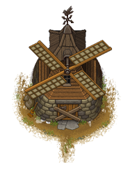

Mill
| This article is a stub. You can help Graveyard Keeper Wiki by expanding it. |
| Mill | |
|---|---|
 | |
Basic information
| |
Related pages :
|
Miller |
Location(s)
| |
| Northern Wheat Farm | |

The Mill is located in the northern part of the Wheat Farm. When you first arrive the mill is broken and needs to be repaired. After repaired, the Miller will allow you to use it to mill wheat for free. The Mill is more efficient than the cooking table as it can be used to instantly turn 10×
wheat into 15×
flour.
Cost
| Icon | Materials Required | Energy |
|---|---|---|
| 5× Complex iron parts 6× Wooden plank 1× Paper with calculations |
- |

| ||||||||